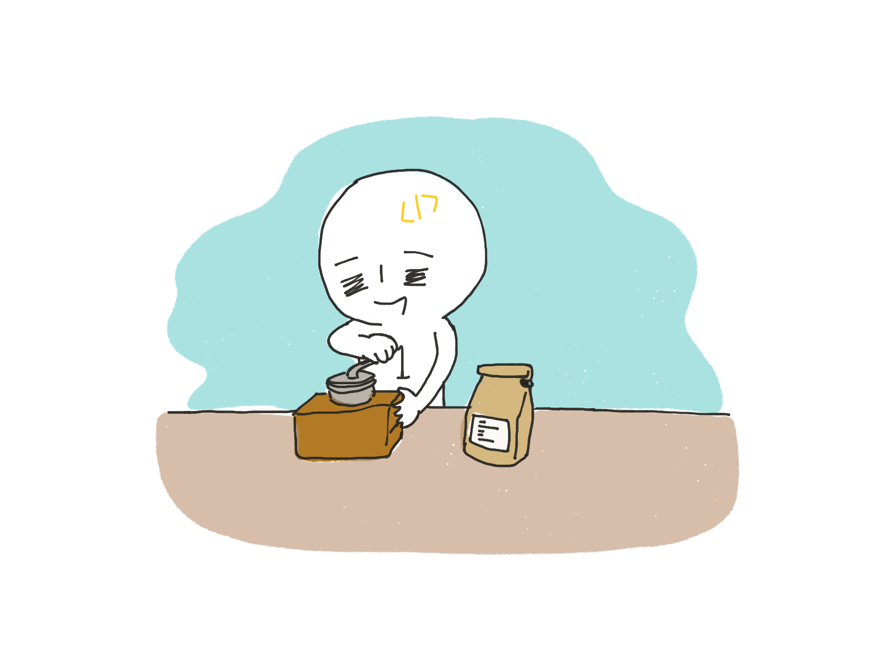

１分くんを紹介します。
北海道の田舎に住む開発者の１分くんはコロナ19以前から在宅勤務をしてきたが、コロナ19は１分くんの生活にも変化を与えた。
朝起きると、コーヒーを入れて気がつく。
ソーシャルディスタンスのために静かな海の方へランニングをする。
時々会う海鳥と目礼を交わす。
そうだ、ツイッターのあの鳥。
運動を終えて家に帰って作業を始める。
ご飯は家で食べるか、テイクアウト可能なメニューを選んで広々とした野外で食べる。 もちろんソーシャルディスタンスのためだ。
普段、午後の作業は家の近くの働きやすいカフェで行ってきたが、Covid-19以降は家でする日が多くなった。
ラーメンマニアらしくYouTube東京生活を見ながらおやつでラーメンを食べる
寝る前に、 たーまにヨガをする
一日の仕事を終わらせて、携帯をいじりながら眠る